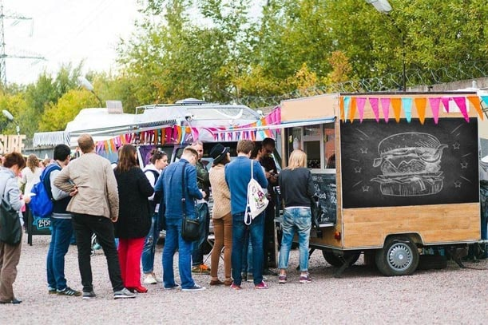
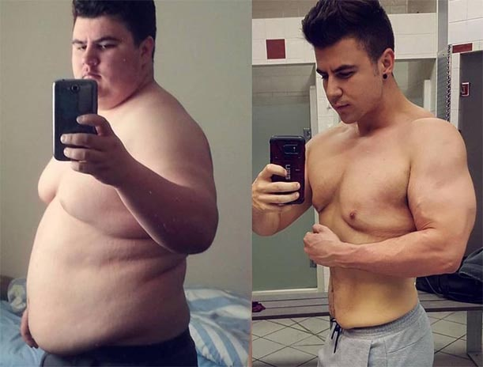
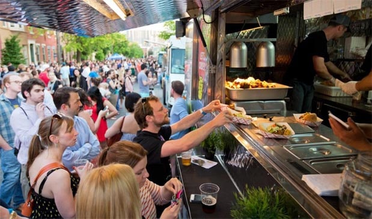
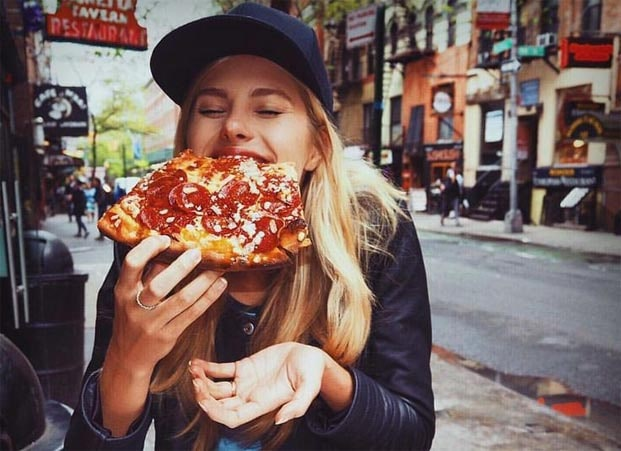
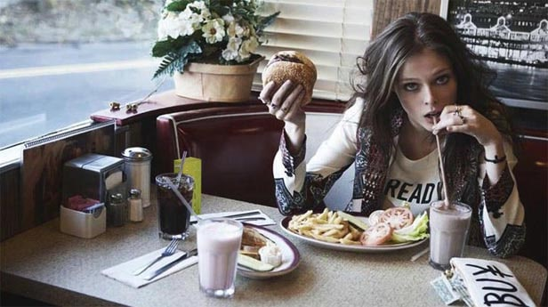
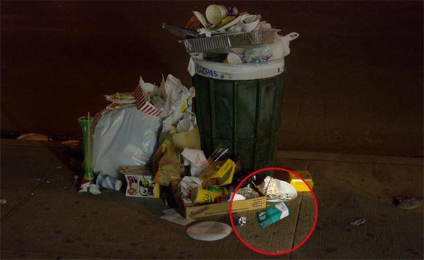
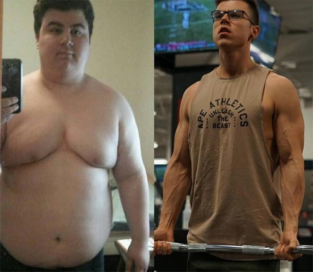
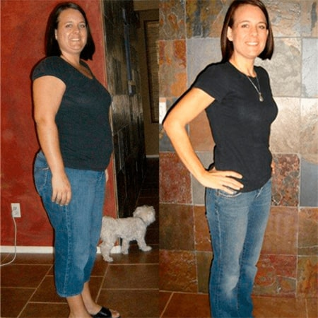
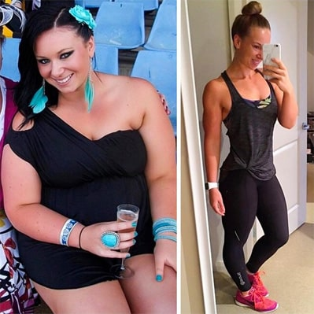
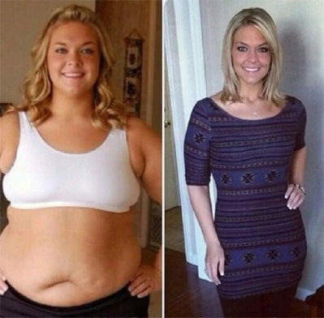

Здравейте на всички! С Вас е Димитър Красимиров.
Днес ще чуем една история, която е изненадваща във всяко едно отношение – за това как собственикът на ресторант за бързо хранене е пристрастил посетителите си към неговата храна... чрез отслабване!
Хамбургери, пици и други неща са яли и са отслабнали абсолютно всички, включително и Мишо, който работеше там няколко години. Хранейки се изключително с храна за бързо хранене, Мишо свали няколко десетки килограма, както и други гости на заведението с наднормено тегло. Те ядоха и отслабваха, и бяха много. Както се получаваше така, самият Мишо се съгласи да ни разкаже само на диктофон. Неговата история от първа ръка.
Публикувано 09.10.2020
история

Тайната на бързото хранене, от което се отслабва
Здравейте на всички, аз съм Мишо и преди изглеждах така. За три месеца работа в заведение за бързо хранене аз отслабнах. Не съм тичал, не съм работил денонощно и не съм бил на диета. Работих в това същото заведение за хамбургери, от които се отслабва. Наскоро напуснах и искам да разкажа на хората истината за тайната съставка, която нашият готвач слага в соса, за да накара хората да отслабнат и да се връщат при него отново.

Когато в нашия град имаше малко туристи, тогава заведенията за бързо хранене не бяха популярни. След това започнаха да се отварят първите точки с понички и хот-дог. И се оказа, че това е печелившо нещо. Туристите предпочитат бърза и вредна храна. Никой не се пристрастява към варени моркови и брюкселско зеле, но към пържени картофи – колкото искате. Защо? Тъй като те са специално създадени за тези цели.
Хамбургери с тайна съставка
Шефът ми по-рано е работил в ресторант и готвеше добре. И също решил да започна собствен бизнес. Но конкуренцията беше твърде голяма и храната му не стана толкова популярна, колкото се надяваше. Шефът ми взе голям кредит за бизнеса си и се опитваше по различни начини да съживи бизнеса си. Шест месеца той работеше на минус, но след това хората тръгнаха. Той дори спря да се справя сам и ме взе за помощник.

Много от местни жители са обсебени от здравето си – от спорта и правилното хранене. И изведнъж започнаха да идват все повече и повече клиенти. И не само дебелаци, но идваха и стройни момчета и момичета от фитнеса. Нашата точка стана популярна: за нея пишат в блоговете за улична храна, добавят я в пътеводители и карти, които привлече и туристите.

Уличното бързо хранене стана по-популярно от ресторанта на мишлен
Защо изведнъж се появи такъв интерес? Бързо хранене беше най-обикновено. Пържени картофи, различни хамбургери и безалкохолни - без нищо пикантно. Освен специалния сос. Рецептата му се пазеше в строга тайна. Шефът ми го готвеше лично и не вярваше на никого. И аз се пристрастих към хамбургера с кашкавал.
Ако не го хапвах сутрин, цял ден нямах настроение и сила. Изплаших се, че в соса се слага нещо забранено, за да могат хората да се пристрастят. Редовните клиенти ставаха все повече. Хората идваха при нас отново и отново, защото всички... отслабваха. И това е вярно.

Имах 25 кг наднормено тегло. За три месеца работа ги свалих всичките. Въпреки че ядох почти само хамбургери и пържени картофи. Също така намерих сили и желание да започна да ходя на фитнес. Нашият редовен клиент треньор дори ми подари абонамент и ми разработи програма за отстъпка на нашите хамбургери. Това беше странно. Вижте как се промениха редовните ни клиенти за няколко месеца.


Уплаших се и занесох соса в лабораторията на анализ. И той ме шокира! В състава му нямаше нищо забранено. Само странен набор от подправки с натурален състав. Но не може една обикновена подправка да дава сила, да подобрява храносмилането и да помогне в отслабването. Това сериозно. Вижте как изглеждах преди да започна работа в заведението за бързо хранене и сега. Ядох на работа и разбрах, че ставам по-слаб и изглеждам много по-добре. Бях обсебен и реших на всяка цена да разбера защо хората отслабват. Но не можах да намеря нищо. Зеленчуците и месото ги караха пресни от фермата, а местната фурна печеше питките. И това ме подлудяваше. Отвори се втора точка. Опашката пред щанда дори в делничен ден се простираше по цялата улица, цените се повишиха, а хората не намаляха. Започнах да си измислям луди идеи, когато изведнъж истината ми се разкри.

Защо всички отслабват от хамбургерите?
Когато бизнесът на шефа не вървеше и имаше риск да загуби всичко, включително ипотекираната си къща, той направи гениален ход. Измислил рецепта за бързо хранене, от която се отслабва. Как го е направил? Купил е известното натурално средство , което пият актьорите, певците, политиците, лекарите, диетолозите, моделите и т.н., за отслабване, и е започнал да го добавя в соса. И намалил цените. Лудост. Работил е на загуба и е чакал да се появят хора. Появиха се! Започнаха да купуват хамбургери и стана "чудо". Те ядоха и отслабваха.

Откъде знам това? Случайно видях опаковката, изучих я надлъж и нашир, сравних я с лабораторния анализ на соса. И всичко си дойде на мястото. Казах на шефа, че знам за съставките и поисках увеличение на заплатата. Шефът ми отказа, като каза, че никой няма да ми повярва и че трябва да съм щастлив, че от дебел пъпчив младеж се превърнах в строен красавец. Стана ми обидно. В последно време работех без почивен ден и продължавах да получавам много малко.

Напуснах. И сега искам да кажа на всички, които са яли отслабващи хамбургери. Отслабнахте за сметка на , който се добавя към соса. Вече не е нужно да плащате повече и да убивате стомаха си с храна за бързо хранене. Можете спокойно да си купите сами. Освен това производителят често прави промоции и подаръци при покупка. А има един страничен ефект – искате да ядете по-малко. Помня любимите си клиенти, които идваха за хамбургер, но не можеха да го изядат и почти се давеха. Защото се страхуваха, че ако не го изядат, отново ще надебелеят. Сега се надявам, че всички ще научат истината – можете да отслабнете, като добавите "тайната" съставка в абсолютно всяка храна!
Леле, ето това са новини.
Чух нещо подобно от брат ми за тези хамбургери, но не му повярвах.
Аз лично отслабнах от хамбургер с месо. Но истината е много скъпо и не толкова вкусно, колкото бихме искали. Но сега знам тайната и просто ще си купя и ще ям това, което си искам и ще вляза във форма, за която винаги съм мечтала.

На мен ми се струва, че Вие и сега изглеждате страхотно, няма нужда да отслабвате повече.
От къде може да се купи ? Много бързо!
Няма никакви трудности да си купите , директно от производителя, поръчайте всички.
Аз съм една от първите, които се пристрастиха към отслабващото бързо хранене. Наистина отслабнах с него и почистих тялото си. Забелязах по себе си, че настроението стана по-добро, спя добре и се движа повече. Не се поколебах и отидох на фитнеса и открих в себе си такива способности, за които дори не подозирах преди. Така започнах да отслабвам още по-бързо. След това Мишо ми каза, че в соса има . Само че в по-малко количество от необходимото. Купих си това лекарство и изпих нормален курс. Това са резултатите ми за една година.

страхотен резултат!
И аз също трябва да опитам това средство.
е натурален и ефективен. Аз съм във възторг. Наистина ми помогна! Не само, че отслабнах с 20 кг, но и ми се поиска да спортувам сама. Сега имам такава фигура, за която никога не съм мечтала.
